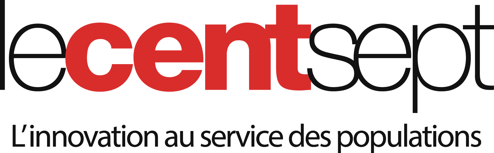
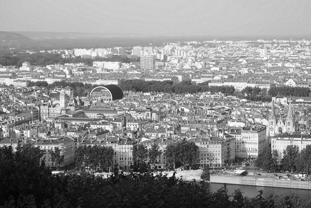
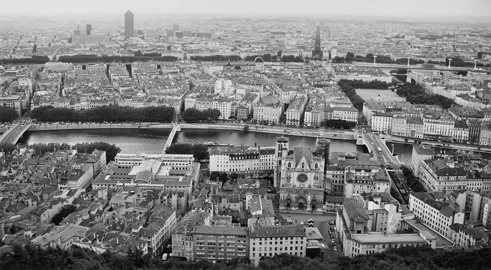

Lecentsept est une association qui regroupe Lyon Métropole et des Grands Comptes autour de 5 acteurs de l'innovation sociale : Ashoka, le Mouves, In Homine, Etic et Ronalpia. Tous ensemble, nous souhaitons accompagner les entrepreneurs sociaux porteurs de solutions, pour le territoire métropolitain. Tout jeune projet né en Janvier 2016, nous avons pour objectif de devenir le pôle d'excellence français en innovation sociale.

super span
Ecosystème
super span
super span
Nos Missions
super span

---- Baromètre des besoins ----
Détection des besoins sociaux du territoire dans tous les domaines.
- Emploi et insertion.
- Education et jeunesse
Emploi
- Consomation
- Environnement
Cadre de vie
- logement
- Vivre ensemble
- Santé
Solidarité

---- Détection et sélection ----
Sélection des pépites entrepreneuriales pour résoudre les besoins du territoire.

---- Accompagnement ----
Incubation, booster, transfert d'expertise pour maximiser l'impact social des entrepreneurs. Parainage de nos entrepreneurs sociaux et mécénat.
---- Détection et sélection ----
Essaimage, duplication, co-création sur le territoire grâce à nos expert.

---- Promotion de l'entrepreunariat ----
Evénement, mise en réseau, animation de la communauté pour faire vivre notre écosystème.
super span
Nos Engagements
super span
- Répondre aux besoins ou aux défis du territoire en apportant des solutions à travers les projets.
Pour le territoire
- Accueillir tous les acteurs dès lors qu'ils sont porteurs d'une initiative à impact social, sociétal ou environnemental.
- Leur permettre de démultiplier leur impact.
- Cultiver l'échange entre individus de différents horizons dans un espace partagé.
Pour les porteurs de projet
- Structurer un modèle économique hybride basé sur une gouvernance équilibrée.
Pour le centsept
super span
Qui sommes nous?
super span